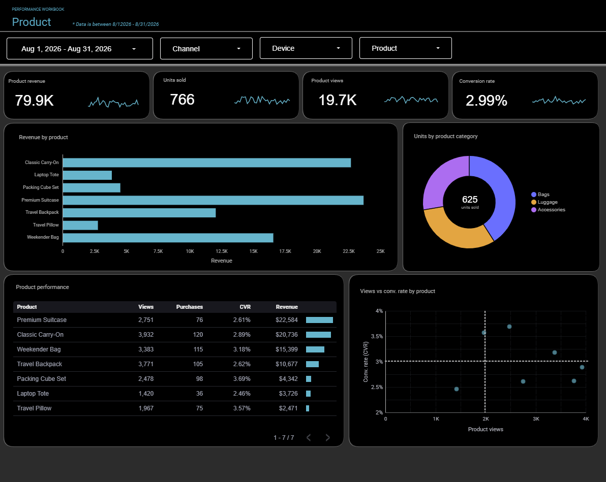
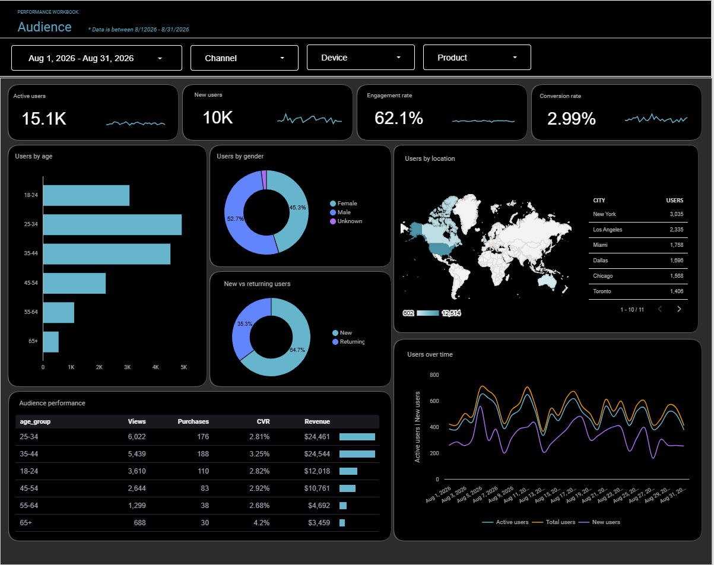

Digital Analytics & Business Intelligence
From data collection to business insight.
I help businesses connect, organize, analyze, and visualize marketing and performance data so teams can understand what is working and make better decisions.
10+ years in digital analytics
Director-level leadership
MBA, Finance & Marketing
Full analytics workflow
01
CollectTracking & measurement
02
ConnectData integration
03
AnalyzePerformance & insights
04
VisualizeDashboards & reporting
About
Analytics should reduce uncertainty, not add complexity.
I am a digital analytics leader with experience spanning business intelligence, marketing measurement, reporting automation, data transformation, attribution, audience analysis, and performance optimization.
My work has included building analytics strategies for clients, creating and leading business intelligence capabilities, automating reporting workflows, and translating complex data into clear recommendations for both technical and non-technical stakeholders.
How I Help
Build a clearer view of your business.
From tracking and data integration to dashboards and performance analysis, I help teams make their data more useful.
Business Intelligence & Dashboards
Create intuitive, interactive reporting that gives teams and leaders a clear view of performance.
Paid Media & Marketing Analytics
Analyze and optimize performance across paid search, paid social, programmatic, display, and emerging media channels.
Data Integration & Automation
Connect fragmented sources, transform data, and reduce manual reporting with scalable workflows.
Tracking & Measurement
Build more reliable measurement foundations for site behavior, conversions, campaigns, and testing.
Featured Work
Interactive analytics built for decision-making.
Two examples showing different sides of the analytics workflow: executive sales intelligence and digital marketing performance.
01 / Microsoft Power BI
Executive Sales Performance Dashboard
The challenge
Leadership needs a fast way to understand revenue, profitability, orders, product performance, and sales-team results without losing the ability to drill into the drivers.
The solution
A multi-page Power BI report that combines executive KPIs with product, category, regional, salesperson, and prior-year comparisons through interactive slicers and visuals.
What it answers
How the business is performing, where growth or declines are occurring, which products and categories drive results, and which salespeople are contributing most.


See It Work
Watch the dashboard in action
The walkthrough shows the interactive filters, KPI switching, responsive visuals, and navigation across report views.
Capabilities demonstrated
Power BIData ModelingInteractive SlicersKPI DevelopmentYoY AnalysisExecutive Reporting
02 / Looker Studio
Digital Marketing Performance Dashboard
The challenge
Marketing performance data can be difficult to interpret when revenue, traffic, conversion, channel, product, device, and audience insights live across separate views.
The solution
A multi-page Looker Studio dashboard that brings performance data together across executive overview, product performance, and audience analysis while allowing users to filter by date, channel, device, and product.
What it answers
How revenue and traffic are trending, which channels and products drive results, how audiences behave and convert, and where opportunities exist across devices and markets.



See It Work
Watch the dashboard in action
The walkthrough demonstrates navigation across report views, interactive filters, and how the dashboard connects marketing, product, and audience performance in one reporting experience.
Capabilities demonstrated
Looker StudioMarketing AnalyticsE-commerce ReportingProduct AnalysisAudience AnalysisInteractive Filtering
Experience
A decade of turning marketing data into business decisions.
Analytics leadership across agency, client strategy, reporting automation, measurement, and business intelligence.
2022 — Present
WMX
Director of Analytics
2020 — 2021
Tinuiti
Associate Director, Insights & Analytics
2016 — 2020
WMX
Digital Analytics Manager → Director of Analytics
2014 — 2016
Zimmerman Advertising
Digital Analyst
EducationMBA, Finance & MarketingUniversity of Miami School of Business
EducationB.A., EconomicsUniversity of Colorado Boulder
Tools & Capabilities
Technology is part of the solution — not the whole story.
Visualization & BI
Power BI · Looker
Data & Automation
Alteryx · BigQuery · Supermetrics · Advanced Excel
Measurement & Tracking
GA4 · Adobe Analytics · Google Tag Manager · CM360 · DV360 · SA360
Paid Media & Marketing Analytics
Paid Search / SEM · Paid Social · Programmatic · Display · TikTok · Reddit · Omnichannel · Attribution · A/B Testing
Let’s Connect
Have data, but not enough clarity?
Let’s talk about how better measurement, reporting, and analytics can help your team make faster, more informed decisions.
Prefer to reach out directly?
Keith.LeMontang@gmail.com